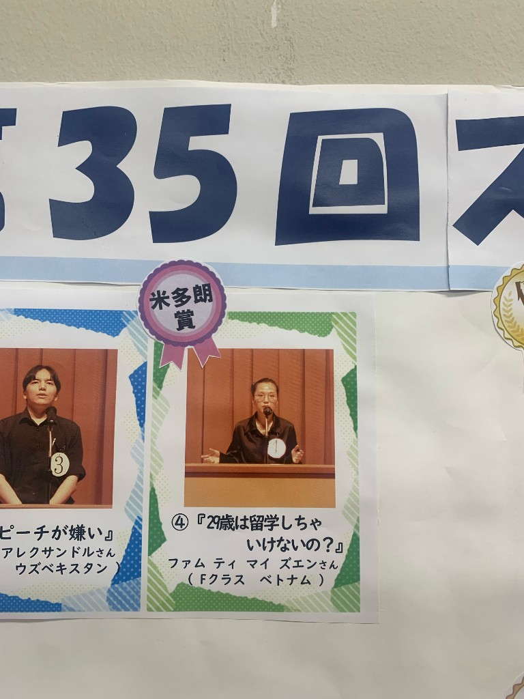
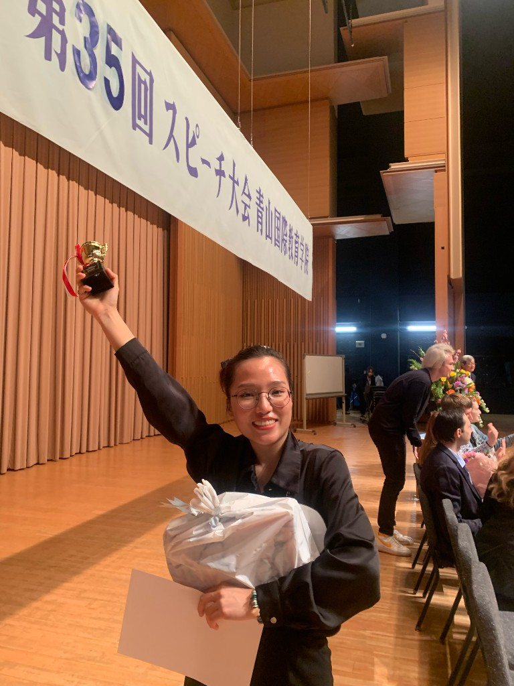
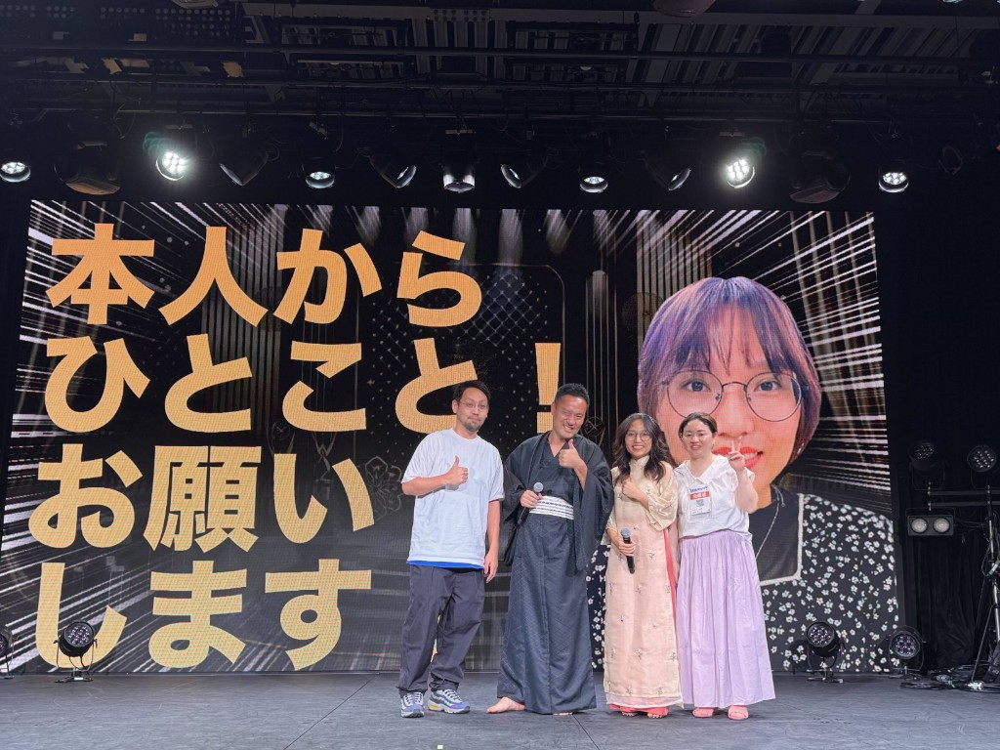
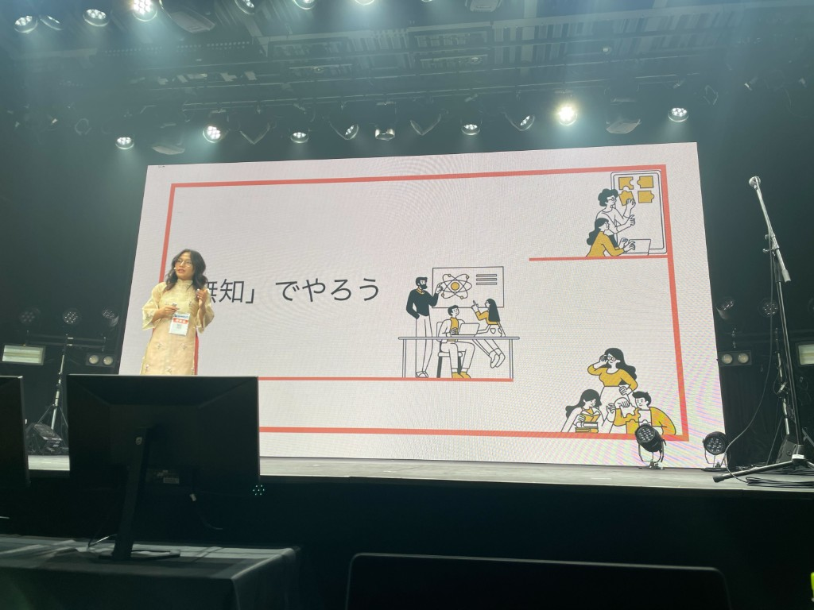
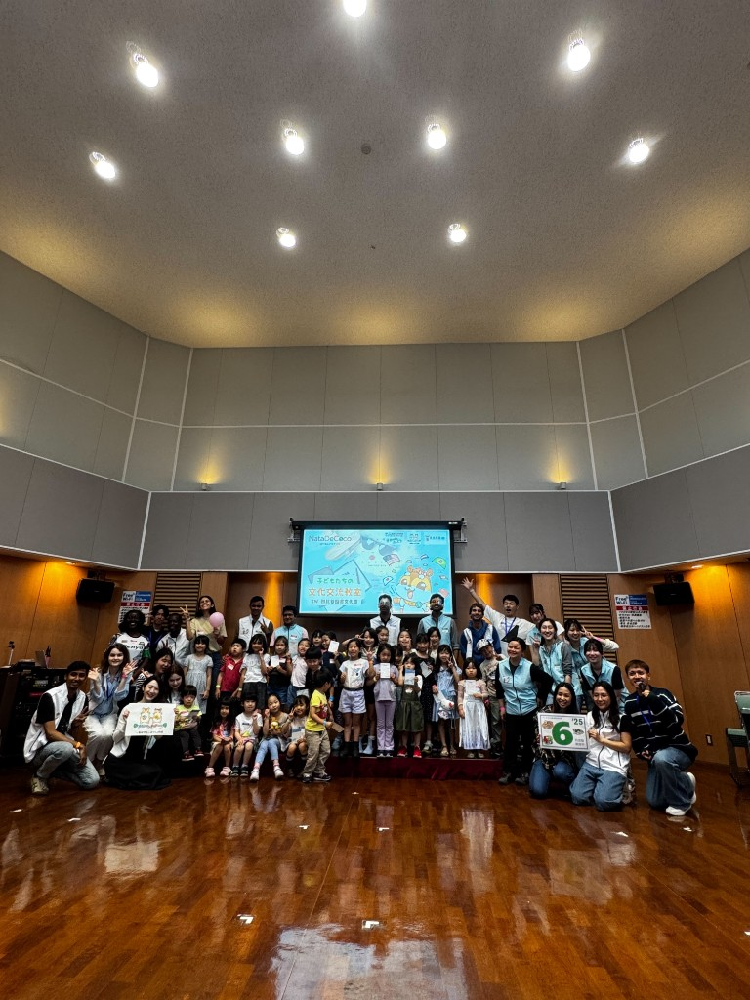
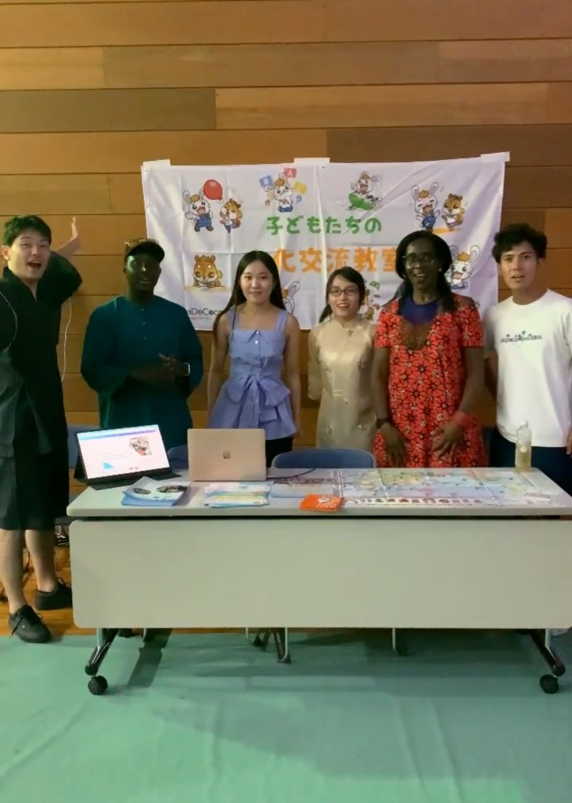

Profile
現場を重視し、関係者をつなぐ推進力
私の強みは、品質管理・進行管理・顧客折衝をひとつの流れとして捉え、日越チーム間の橋渡しを行えることです。
Bravesoft VietnamではQAリーダー、Bravesoft JapanではBrSE・プロジェクトディレクターとして、要件整理から見積・進捗管理、法務・経理連携まで一貫して携わってきました。入社前のビジネスマッチングイベント運営経験も活かし、企業と機会をつなぐ視点を大切にしています。
Strengths
業務で強みを発揮できる領域
Cross-border Bridge
日本側クライアントとベトナム開発チームの間で、要件伝達・仕様展開・進捗共有を行い、認識齟齬を減らしながらプロジェクトを前進させます。
Quality Management
テスト計画策定、不具合検証、再現・修正指示、メンバー進捗管理まで一貫して対応し、安定した品質を維持します。
Project Coordination
スケジュール、関係者、優先順位を整理し、顧客・開発・法務・経理など多様なステークホルダーと協働して成果に結び付けます。
Career
職務経歴
BRAVESOFT JAPAN 株式会社
日本側クライアントとベトナム開発チーム間の要件伝達・仕様展開、見積作成、進捗・タスク管理。ヤンジャン!、AI StLike、マルハンアプリ等の品質管理も担当。
BRAVESOFT JAPAN 株式会社
開発・検証の進捗管理、顧客要件ヒアリング、法務・経理連携。ReFa GINZA旗艦店向けカスタム受付システムの開発全体管理を担当。
BRAVESOFT VIETNAM
Web/アプリの品質保証。QAリーダーとして日本向け自社プロダクトの品質管理を担当。
ASIA STAR INTERNATIONAL CO.LTD
F&B分野のビジネスマッチングイベント運営、来場者対応、飲食店開業支援に向けた物件探索・顧客紹介。
Selected Projects
代表プロジェクト
各プロダクトの概要はbravesoft公式実績を参考に記載しています。
ReFa GINZA
クライアント：株式会社MTG様
2025年11月銀座にオープンしたReFa旗艦店向けカスタム受付システム。刻印・刺繍サービスのユーザーサイト／管理サイトについて、開発全体管理を担当しました。
- 開発・検証の進捗管理
- 顧客要件ヒアリング・仕様協議
ヤンジャン! webサイト
クライアント：株式会社集英社様
集英社公式・ジャンプ系青年マンガ総合サイトのリニューアル案件。漫画・グラビアコンテンツの読書体験を支えるWebサイトの品質管理を担当しました。
- Web/UIのテスト計画・実行
- 不具合検証・再現
- リリース品質の維持
Locipo（ロキポ）
クライアント：東海テレビ・中京テレビ・CBCテレビ・テレビ愛知 等
名古屋の民放5局が運営する動画配信プラットフォーム。保守運用・追加開発フェーズにおいて、テスト計画と品質管理を担当しました。
- テスト計画・進捗管理
- 不具合検証・開発連携
- 継続運用の品質維持
こどもちゃれんじTV（スマホ版・テレビ版）
クライアント：株式会社ベネッセコーポレーション様
幼児向け映像配信アプリ。スマートフォン版とAndroid TV / Fire TV向けテレビ版のQAを担当し、視聴体験の安定性と継続運用品質を支えました。
- スマホ・TV版の機能検証
- 多端末での動作確認
- リリース前後の品質管理
AI StLike（AI ストライク）
クライアント：株式会社ベネッセコーポレーション様
進研ゼミ高校講座会員向けの次世代型学習アプリ。アダプティブ授業とAI問題演習を搭載したサービスの品質管理を担当しました。
- アプリ機能のQA
- 不具合検証・再現
- 日越チームとの品質連携
マルハンアプリ
クライアント：株式会社マルハン様
全国319店舗以上の台データ閲覧や店舗情報検索ができる公式アプリ。長期運用プロジェクトにおいて、機能追加・改善フェーズの品質管理を担当しました。
- iOS/AndroidのQA
- 継続リリースの品質確認
- 不具合管理・進捗報告
Activities
仕事以外の活動
語学・コミュニケーションを活かし、社内外で継続的に取り組んできた活動です。
2023
日本語スピーチ大会（2023）
2023年、青山国際教育学院の第35回スピーチ大会に参加。15名の参加者が集う中、日本語での発表・コミュニケーション力を活かしました。

写真準備中
写真準備中2024
プレゼンテーション（2024）
会社内でビジョンを共有するプレゼンテーションを実施しました。

写真準備中
写真準備中2025
英語クラブボランティア（2025）
日本の子ども向け英語クラブでボランティア活動に参加し、言語交流を通じて相互理解を深めました。

写真準備中
写真準備中Contact
お問い合わせ
プロジェクト推進、品質管理、日越クロスボーダー業務に関するご連絡は、以下よりお気軽にどうぞ。